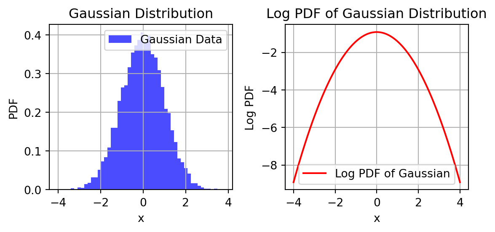

Maximum Likelihood Estimation (MLE) and Maximum A Posteriori Estimation (MAP) are two common statistical methods used for parameter estimation in various fields, including machine learning and statistics. They are often used in the context of estimating parameters of a statistical model or distribution. Here are the key differences between MLE and MAP:
Objective:
MLE (Maximum Likelihood Estimation): MLE aims to find the parameter values that maximize the likelihood function, which measures how well the observed data fits the model. In other words, it seeks the parameter values that make the observed data most probable under the assumed model.
Basically, I have prob density ie a Gaussian. I take its log and then compute the derivate of it w/ rspect to some variable of interest i.e \(\mu\), or \(\underline{w}\)
Code
import numpy as npimport matplotlib.pyplot as pltfrom scipy.stats import norm# Generate random data from a Gaussian distributionmean =0# Mean of the Gaussian distributionstd_dev =1# Standard deviation of the Gaussian distributionsample_size =10000# Number of data pointsdata = np.random.normal(mean, std_dev, sample_size)# Create a figure with two subplotsfig, (ax1, ax2) = plt.subplots(1, 2, figsize=(6, 3))# Plot the Gaussian distribution on the left subplotax1.hist(data, bins=50, density=True, color='blue', alpha=0.7, label='Gaussian Data')ax1.set_xlabel('x')ax1.set_ylabel('PDF')ax1.set_title('Gaussian Distribution')ax1.grid(True)# Calculate the PDF of the Gaussian distribution for plottingx = np.linspace(mean -4* std_dev, mean +4* std_dev, 1000)pdf = norm.pdf(x, mean, std_dev)# Plot the log PDF on the right subplotlog_pdf = np.log(pdf)ax2.plot(x, log_pdf, 'r-', label='Log PDF of Gaussian')ax2.set_xlabel('x')ax2.set_ylabel('Log PDF')ax2.set_title('Log PDF of Gaussian Distribution')ax2.grid(True)# Show legendsax1.legend()ax2.legend()plt.tight_layout()plt.show()

MAP (Maximum A Posteriori Estimation): MAP, on the other hand, incorporates prior information about the parameters into the estimation process. It seeks the parameter values that maximize the posterior probability, which combines the likelihood of the data and the prior probability of the parameters.
Want to know more?
Incorporation of Prior Information:
MLE: MLE does not consider any prior information or beliefs about the parameters. It solely relies on the likelihood of the observed data. MAP: MAP explicitly incorporates prior beliefs or information about the parameters through the prior probability distribution. This makes MAP especially useful when you have some prior knowledge about the parameters.
Formulation:
MLE: The MLE estimate for a parameter is obtained by maximizing the likelihood function, typically by taking the derivative of the likelihood function with respect to the parameter and setting it to zero. MAP: The MAP estimate for a parameter is obtained by maximizing the posterior probability, which is proportional to the product of the likelihood and the prior probability. Mathematically, it involves finding the mode of the posterior distribution.
Robustness to Small Sample Sizes:
MLE: MLE can be sensitive to small sample sizes because it tends to overfit the data when the sample size is small. MAP: MAP can provide more stable estimates in situations with limited data because it incorporates prior information, which can act as regularization.
Interpretability:
MLE: MLE estimates tend to be more data-driven and may not incorporate external knowledge. They are often considered more objective. MAP: MAP estimates can be influenced by prior information, which can introduce subjectivity into the estimation process. The choice of the prior distribution can significantly impact the MAP estimates.
In summary, the main difference between MLE and MAP is the incorporation of prior information. MLE seeks the parameter values that maximize the likelihood of the data, while MAP combines the likelihood with prior information to find parameter values that maximize the posterior probability. The choice between MLE and MAP depends on the specific problem and the availability of prior knowledge about the parameters.